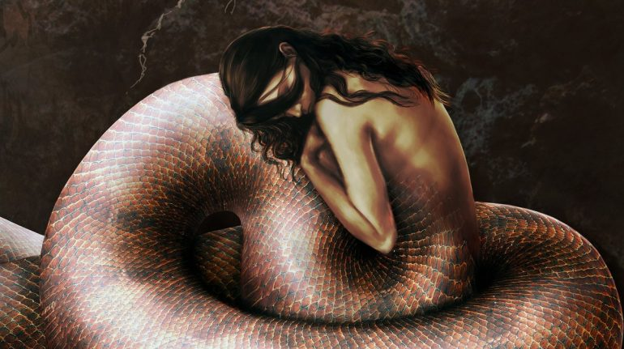

Apariencia
Según la antigua tradición griega, Lamia tiene la cabeza y los pechos de una mujer, pero el resto de su cuerpo es serpenteante. Según algunos relatos, su forma quimérica es espantosa, pero otros escritores parecen haber quedado hipnotizados por su forma, incluso describiendo sus escamas como gemas preciosas y las bobinas de su cuerpo como gráciles.

Otros escritores griegos abandonan el cuerpo de la serpiente por completo, simplemente escribiendo que el rostro de Lamia se volvió malvado y contorsionado cuando comenzó su primera ola de asesinatos. Su rostro también puede haber sido desfigurado por la pérdida de sus ojos; en algunos mitos, los arrancó con pena por sus propios hijos, y en otros, Zeus le dio el poder de quitárselos para que pudiera dormir
La Lamia es una de las muchas monstruosidades que podemos encontrar en la mitología griega. Los primeros mitos griegos la describen como una hermosa mujer, agraviada por un dios. Su nombre era Lamia y era la reina de Libia. Como tantas otras mujeres griegas, cayó en desgracia después de tener un romance con Zeus. El relato de Lamia es tan dramático como perturbador y aquí lo puedes conocer.
Lamia era hija del rey Belus de Egipto y de Lybie. Los autores antiguos la describen como “una reina de gran belleza”, y se afirma que fue una de las amantes favoritas de Zeus. Algunas fuentes también la mencionan como hija de Poseidón.
Pero iba a ocurrir una gran desgracia. Hera, esposa de Zeus, reaccionó llena de ira cuando se enteró del romance entre su esposo y Lamia. En venganza, Hera sólo pudo hacer daño a los hijos de Lamia.
Las versiones son diversas al respecto: se dice que Hera secuestró, escondió o mató a los hijos de la reina. Otra versión dice que hizo que Lamia los matara cada vez que la muchacha daba a luz a un niño.
Al cabo de un tiempo, Lamia se volvió loca y empezó a robar bebés de madres más afortunadas que ella sólo para comérselos. Además, Hera maldijo a Lamia con insomnio. Eso también contribuyó a que Lamia se volviera loca. Sus aterradores actos transformaron a la antes hermosa reina en un monstruo.
En un extraño intento de arreglar las cosas, Zeus dotó a Lamia de la capacidad de quitarse los ojos y ver el futuro. No está claro cómo estos dones podían combatir el insomnio crónico y la pérdida de los hijos, pero así es como lo dice el mito.
Su representación física cambia entre los mitos y las fuentes. A veces se la describe con un aspecto bestial. La mayoría de las veces se la describe con la mitad superior de una mujer hermosa y la mitad inferior de un lagarto o una serpiente.
Diodoro Sículo, un antiguo historiador griego, intentó dar un relato racionalizado de la historia de Lamia. En su versión, Lamia era una reina libia que se volvió loca por la pérdida de sus hijos y ordenó a sus tropas que secuestraran a los niños de sus madres y los mataran. En su versión, la reina estaba tan eternamente borracha que era como si estuviera ciega.
El nacimiento del Coco o el Boogeyman
La historia de Lamia se transmitió de generación en generación y, con el tiempo, se convirtió en el monstruo más temible de la Antigua Grecia, una aterradora criatura devoradora de niños que las madres griegas utilizaban para asustar a sus hijos y hacer que se comportaran bien. Con el tiempo, este monstruo devorador de niños se convirtió en la
“mujer del saco”.
También pudo ser el antecedente más temprano que dio pie a la creación de otros monstruos relacionados con los niños que se portan mal: el Coco o el Boogeyman.
Relacionado: Wendigo: la leyenda de la extraña criatura que vaga por los bosques devorando a las personas
A veces, también se le llamaba Mormolyca (o Mormo, para abreviar), palabra que puede traducirse aproximadamente como
“el terrible monstruo con forma de lobo”. También hay autores que dicen que Lamia evolucionó hasta convertirse en una especie de súcubo.
Como tal, se rumorea que seducía a los jóvenes en sus sueños, se acostaba con ellos y luego les chupaba la sangre (además de la energía sexual).
Presencia en la Edad Media
A principios de la Edad Media, los estudiosos seguían escribiendo sobre la Lamia. Al hacerlo, de alguna manera la llevaron a las enseñanzas bíblicas.
En ese momento, Lamia era un término general para una clase de seres sobrenaturales que robaban niños y los mutilaban. En la Vulgata (una traducción de la Biblia del siglo IV) se utiliza Lamia como traducción de Lilith de la Biblia hebrea.
En la mitología judía, Lilith fue la primera esposa de Adán, una criatura desterrada del Edén por no someterse a Adán. A menudo se la representa como la madre de todos los monstruos.
Durante este periodo, la Iglesia utilizó a la Lamia para advertir a sus seguidores sobre ciertos comportamientos. El Papa Gregorio I afirmaba que la Lamia representaba la herejía y la hipocresía. En el siglo IX, Hincmar, arzobispo de Reims, describió a la Lamia como un espíritu reproductor femenino. La Lamia fue descrita como un espíritu sobrenatural que causaba divorcios al tentar sexualmente a los maridos.
Habilidades especiales
Aparte de su potente belleza, las habilidades de Lamia varían mucho de una historia a otra. En general, sus habilidades más comunes son el cambio de forma, la predicción del futuro y la brujería. En muchos mitos, ella es una metamorfa que puede desprenderse de la piel de su serpiente y moverse en la forma de una mujer joven impecablemente hermosa.
Esta habilidad es especialmente útil en historias en las que la reina depuesta prefiere aprovecharse de los hombres en lugar de los niños. Usa su cuerpo inconsciente para seducir a los hombres y luego devorarlos. En otros mitos, ella es una poderosa profetisa que puede prever los acontecimientos antes de que ocurran. Hay dos mecanismos posibles para sus habilidades proféticas.
A veces, sus visiones proféticas le llegan en sueños, pero esta forma de profecía se complica por el hecho de que, cortesía de una maldición de Hera, se ve obligada a quitarse los ojos cada vez que quiere dormir. Otras veces, separa su espíritu de su cuerpo y se desliza sobre la tierra, desvelando secretos que la ayudan a predecir lo que los hombres harán a continuación.
Por último, Lamia tiene una variedad de habilidades relacionadas con la brujería. Es una hechicera menor, con la habilidad de realizar pequeños encantamientos como hacer invisibles a las mujeres o poner una niebla sobre la mente de un hombre, para que no detecte nada extraño que suceda mientras está en su compañía. También es capaz de preparar pociones para propósitos similares.